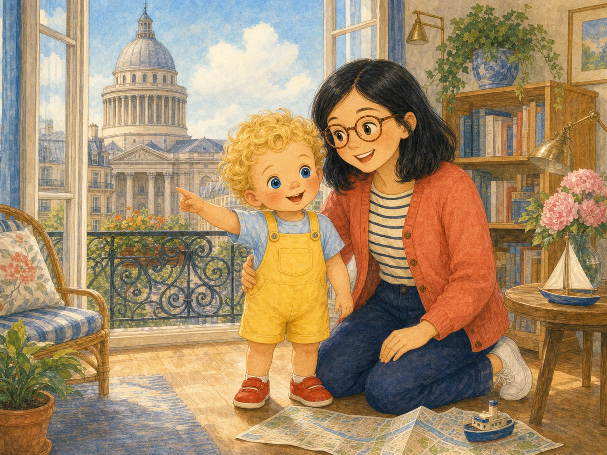
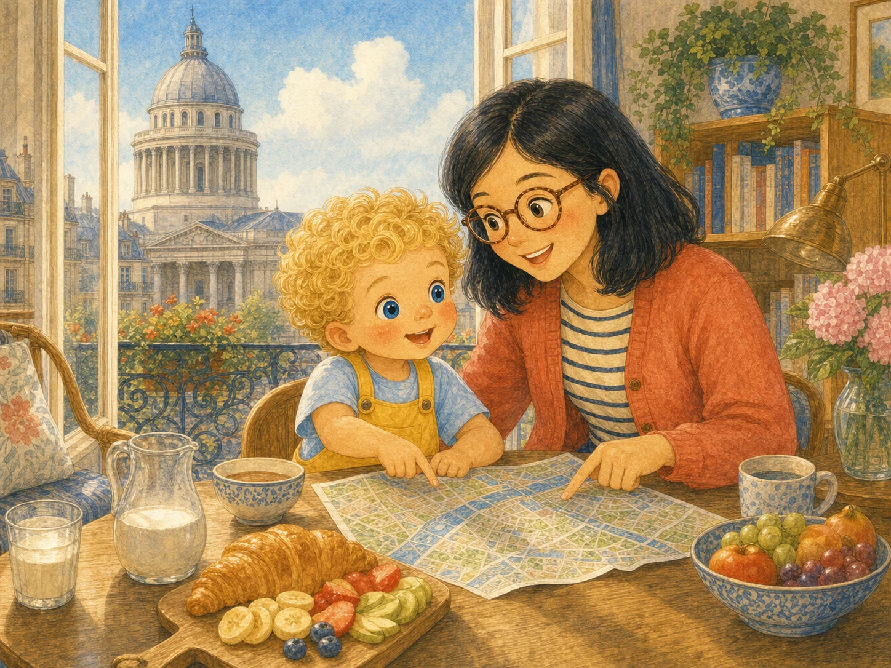
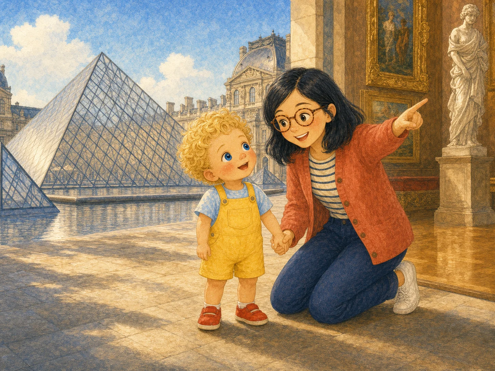
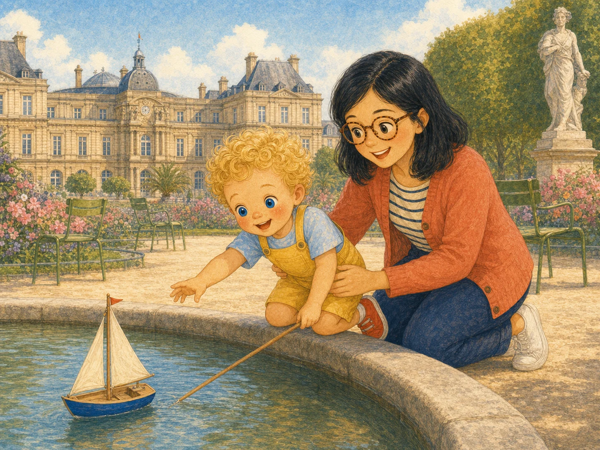
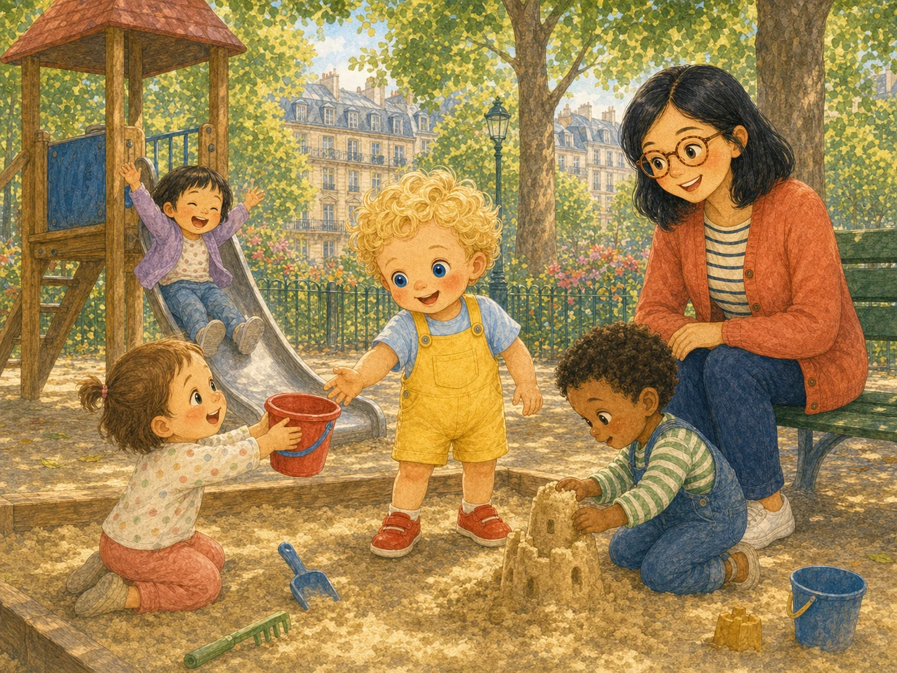
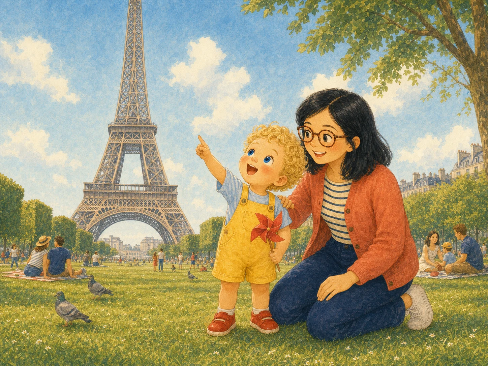
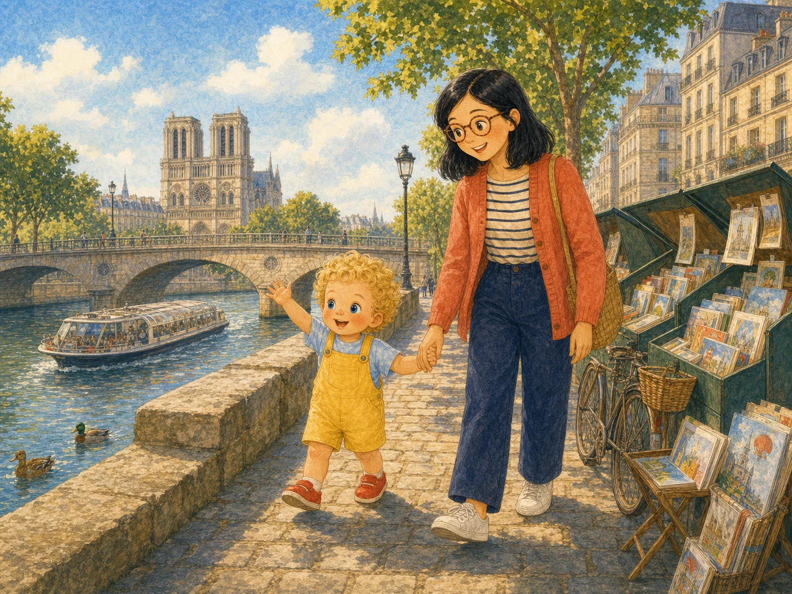
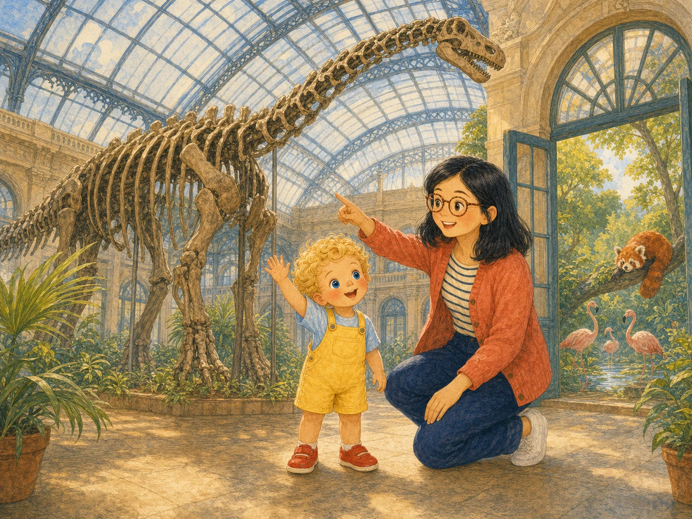
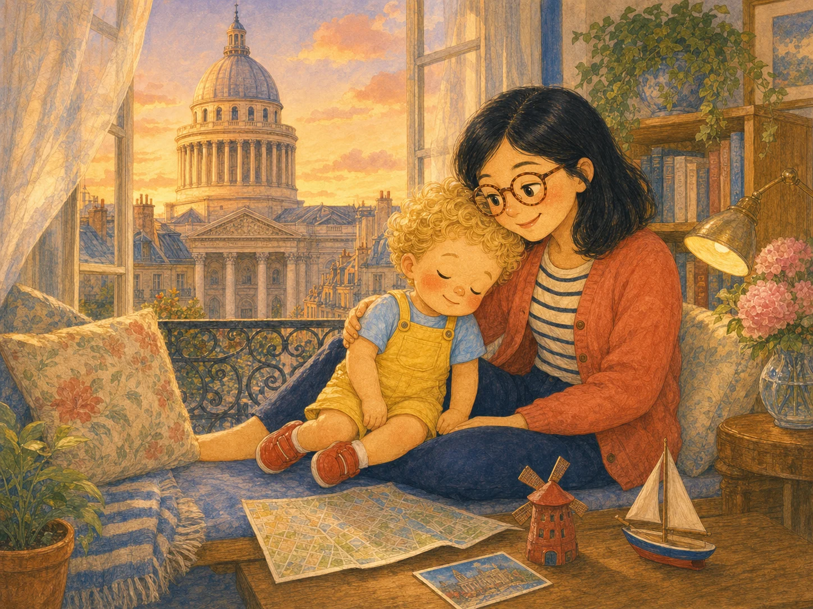

A week of little adventures
Léo’s
Paris Days
Every day, Paris has a new surprise for Léo and Maman.

Every day, Paris has a new surprise for Léo and Maman.

Every morning, sunlight filled Léo’s apartment beside the Panthéon.
He and Maman opened the map. “Where shall we go today?”

At the Louvre, Léo saw a glass mountain sparkling in the sun.
Inside were paintings, statues—and so many faces looking back.

In the Luxembourg Gardens, Léo pushed a little sailboat across the pond.
The wind caught its sail. “Bon voyage!”

Léo shared a red bucket with three smaller children.
Together they built the tallest, wobbliest sandcastle.

The Eiffel Tower stretched high above Léo and Maman.
From the grass below, Léo tipped his head all the way back.

They watched boats glide under the bridges and colorful books flutter at the green stalls.
Paris moved slowly past.

Léo found flamingos, a sleepy red panda, and enormous dinosaur bones.
“Bonjour, everyone!”

At sunset, Léo and Maman came home with tired feet and happy hearts.
Tomorrow, Paris would have another surprise.